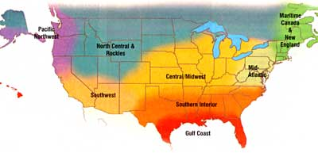
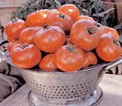
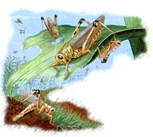

Is something bugging your garden? In this special
Gardeners Almanac offering, our contributors offer pest
management advice, including even employing runner ducks and
wielding pingpong paddles.
- MOTHER
New England/Maritime Canada
The greenhouse is looking empty, the garden, full. Time for a second planting of lettuce, mesclun and cilantro. By late June or mid-July, most garden plants will be well established and looking very lush unless you are plagued with any one of the "terrible three" - flea beetles, striped cucumber beetles or squash bugs. Tiny flea beetles chew pinhead-sized holes in the leaves of greens and brassicas, turning them to lace. Their larvae attack plant roots, too. I opt for a fabric row cover over my salad greens as a physical barrier to protect them, but I use cottonseedbased dormant oil on brassicas. Used as directed, this "eco" oil works extremely well to deter flea beetles. Time usually takes care of striped cucumber beetles. Row covers or hand picking can protect young plants until they gain enough size to withstand the damage. Squash bugs are more of a challenge. To get a jump on our short growing season, I always set out squash and melon seedlings, rather than planting seeds. On the day of transplant, these tender beauties are protected with a roomy bonnet of row cover. After they send out runners, outgrowing the row cover, they must be diligently monitored. Squish the bronzegold egg clusters on the undersides of leaves or smother them with dormant oil. Later, continue to check under the leaves for young and mature beetles. As a last resort, the plant-de rived insecticide rotenone kills them, but it is very strong and should be used only as directed, and with great caution. Rotenone is no longer approved for certified organic products.
- Roberta Bailey [FEDCO Seeds, Waterville,
Maine: (207) 873-7333; www.fedcoseeds.com ]
Mid-Atlantic
Take a moment in mid-June to sow brassicas for a fall crop. Plant thickly under a protective fabric row cover, and then on a wet day in August, move the seedlings out into other beds. When corn reaches 18 inches in height, try planting some heattolerant lettuce between the rows. Keep watch for Colorado potato beetles and foil them with hay or straw mulch, or pick them off the plants. Chickens and runner ducks are better at this than humans, and enjoy it more. Lure cucumber beetles away from crops with golden amaranth (the beetles" favorite); when the amaranth is well infested, release your fowl to spring the "jaws" of this trap. Where Mexican bean beetles are a problem, try `Black Valentine" and `Royalty Purple Pod" beans. These can be grown, harvested and tilled in just before the beetles complete a life cycle, and both have proven resistant to bean mosaic virus. For flavor, yield, and disease and insect resistance, the old-fashioned yellow crookneck squash cannot be beat. Try `Thompson" broccoli for a fall harvest of exquisite disease-and harlequin-bug-resistant heads. The bottom line, though, is that the best key to pest prevention I've encountered is healthy soil. Watering plants with compost tea will strongly combat many diseases and fungi, and, when in doubt, side dress with compost, too.
- Cricket Rakita [Southern Exposure Seed Exchange, Mineral,
Va.: (540) 8949480; www.southernexposure.com ]
Southern Interior
Cabbage worms and cabbage loopers can be problems with - what else? cabbage. They also can attack collards, the vitamin and mineral-packed favorite Southern side dish. Both insects are identified easily as small green larvae eating big holes in your plants. They can be stopped in their tracks by products containing Bt (Bacillus thuringiensis), a naturally occurring bacterium that will not harm humans, wildlife or domestic animals.
Japanese beetles are eating machines, and just a few can destroy a plant in no time. They aren't picky about what they eat, either. Commercially available traps will help, but make sure you put them far away from the infestation site, or you may make a bad problem worse by attracting more beetles to plants already under siege. Aphids can attack a variety of plants in your garden, including cucumbers, melons and tomatoes. The tiny green insects cause the leaves to curl and wilt, and they spread plant disease as well. Yellow sticky traps are the chemical-free way to control aphids - they are attracted to the color and then become stuck in the adhesive "goo." Insecticidal soaps also will kill aphids, although several applications may be needed, and you may have to add a surfactant (spreader) to make the liquid stick.
- Lori Hardee and Karen Park Jennings [Park Seed Company, Greenwood,
S.C.: (800) 845-3369; www.parkseed.com ]
Gulf Coast
Now's the time to plant warm-season crops like okra, Southern peas, Malabar spinach and sunchokes (Jerusalem artichokes). Even a late crop of bush beans isn't out of the question. Keep up the watering, and mulch everything! Leaffooted bugs and their relatives, including the green stink bug, are hard to ignore during this season. They love developing tomatoes, peppers, eggplants, beans and, especially, Southern peas. Hand picking may help, pesticides will work even better, but these bugs keep coming back. If you're not too fond of black-eyed peas, you might plant some off to the edge of the garden and use them as a trap crop.
Squash vine borers start to lay eggs about the time the first squash flowers begin to appear. You can watch for the orange-and-black moths about this time, too - they tend to come in around dusk; then, swat them with a pingpong paddle. Or, spray the stems with recommended pesticides. The best way to deal with pecan scab fungus is by planting or re-grafting to resistant varieties such as "Caddo," "Elliot" or "Forkert." Plum curculio still will be working in the nectarines, peaches and plums; remove any small fruit with a drop of sap protruding as these already have an egg laid in them.
- William D. Adams
[Burton,Texas]
Central/Midwest
This is a wonderful time of year, with plants growing visibly larger every day. Encourage your children to help out with gardening by planting seeds in shapes instead of straight rows - our "happy face" onion patch delighted my daughter last year. Little hands do a fine job weeding, and curious young eyes help patrol for bugs. One insect we watch for is the cucumber beetle, which can strip the leaves off cucurbit seedlings. Some years, we have had to plant our squash and immediately dust them with a mix of diatomaceous earth and rotenone. The cucumber beetle not only eats the plants but also spreads viral diseases, so it's important to control them. They can overwinter in corn stubble, so be sure to do a fall cleanup. If you want to avoid using pesticides in the garden, learn about insect life cycles and eating habits; then, plan your garden accordingly. For example, by seeding carrots after June 15, we generally can avoid carrot rust fly.
Changing weather can bring problems with plant diseases. Hot temperatures followed by cool nights and damp weather spread mildews and early blight. Often, it is too late to salvage plants after disease sets in, so take preventative action beforehand: Leave space between plants for air to circulate and adjust watering practices. If you regularly notice problems with fungal and viral diseases, look for disease-tolerant or resistant varieties. It also is important to rotate your crops each year so that the soil-borne problems do not overtake your garden.
- Connie Dam-Byl [William Dam Seeds Ltd., Dundas,
Ontario: (905) 628-6641; www.damseeds.com ]
North Central/Rockies
"The problem is the solution," says Bill Mollison, co-founder of the Permaculture Movement. The fact that we perceive a pest or disease as a problem ultimately means we do not understand enough about our garden and its ecosystem. Pests give us the opportunity to look further and understand more. Most pests disappear before much damage is done, thanks to a host of beneficial helpers. We help out with daily walks to spot and remove problems while they are small. Our most effective disease control is avoidance of top watering. In the drier climates of the mountainous West, blights, mosaic, molds and scab almost completely disappear when overhead sprinkling is replaced with drip or ditch irrigation. We even cured blossomend rot in our summer squash using this method. If cabbage root maggots become a problem in extremely wet weather, carefully mix a spoonful of diatomaceous earth or wood ashes into the soil, or protect the soil from rain. Plant radishes as a trap crop, or place tar paper around the base of plants to deter the flies that lay the rootmaggot eggs.
Cutworms can be discouraged with paper collars at the base of each pepper plant. Prevent pea-root rot by planting in well-drained soils and rotating crops frequently. Avoid planting peas in cold, wet soil in the spring to avoid seed rot. Many tomato diseases are associated with hot, moist weather and are not a threat in higher, drier climes (except in greenhouses). To prevent most problems, use healthy transplants, fertile soil and plenty of calcium.
- Bill McDorman [Seeds Trust, High Altitude Gardens, Hailey,
Idaho: (208) 788-4363; www.seedstrust.com ]
Pacific Northwest, Part I
Growing a healthy garden with sustainable practices is the ideal long-term insect control and usually is the most effective intervention. To attract good bugs to help prevent pest outbreaks, grow herbs and flowers to provide sanctuary, pollen and nectar.
Fresh, tender peas are easiest to grow in the Northwest when using varieties resistant to pea virus and powdery mildew. Three good examples are `Oregon Trail" shelling pea, `Oregon Sugar Pod 11" and `Sugar Sprint" snap peas. Sow through mid-June and again in mid to late July for an extended fall harvest. Brassicas, members of the cabbage family, all are susceptible to cabbage root maggot. Young plants are vulnerable to damage, but with a covering of a lightweight fabric row cover, you'll be harvesting perfect radishes, pak choi and other susceptible favorites. As plants mature, it's safe to remove the row cover except in areas that have had previous heavy infestations.
Reports keep coming in from Northwest gardeners successfully experimenting with direct-sowing tomatoes in early June. Try an extra-early variety like `Legend," don't sow too deep and cover the planting space with a hot cap, clear plastic jug or row cover. The advantages include gardening ease, no transplant shock and, with `Legend," you get valuable late-blight resistance.
- Rose Marie Nichob McGee [Nichols Garden Nursery, Albany,
Ore.: (800) 4223985; www.nicholsgarnnursery.com ]
Pacific Northwest, Part II
The focus of June and July is typically on summer crops - but don't be deceived. This is the perfect time to start fall and winter crops, too. As your spring-sown greens grow, harvest the lower leaves on a regular basis to allow for multiple pickings. Without a doubt, one pest that tops the list for most Pacific Northwest gardeners is the loathed slug. There is nothing worse than planting a seedling only to have it devoured overnight by these slimy little hooligans. The best defense I have found is slug bait containing iron phosphate. Although it is not certified organic, it is safe to use around pets and children, and the active ingredient is found naturally in soil.
If the carrot rust fly mangles your carrot crop, try growing the resistant yet-sweet-and-tasty `Flyaway" carrot. Diseases thrive in our moist climate. It is so frustrating to nurture tomatoes all season long only to have them destroyed by late blight after the first fall rain. If this has happened to you, try growing `Legend." Bred at Oregon State University, it is the world's first late-blight resistant tomato. `Success PM" summer squash is resistant to powdery mildew, and Alibi" cucumber resists cucumber mosaic virus, powdery and downy mildew, and scab. Keep in mind that one of the best ways to ward off trouble is to start with a strong, healthy plant. Just like people, the healthiest plants are the ones best able to combat diseases.
-Josh Kirschenbaum [Territorial Seed Company, Cottage Grove, Ore.:
(541) 9429547; www.territorialseed.com ]
Southwest
With the arrival of the summer solstice, the Southwest sun intensifies. Be careful not to over fertilize - too much nitrogen can attract sucking insects like aphids. Over the centuries, the "three sisters" of the Southwest - beans, corn and squash - have nurtured several pests. Squash bugs (locally called "chinchas") suck juices from leaves and fruit. Populations build through the summer with the births of new generations. Prevent early infestations with a row cover over your young plants. When flowering begins, uncover the plants to allow pollination, but treat them with pepper spray and regularly brush off the clusters of eggs. Squash vine-borer larvae shut down water uptake, resulting in wilted plants. Again, prevent this with row covers. The adult moth usually is gone by the time the covers must be removed, but check the base of stems for tiny white eggs throughout July. The Mexican bean beetle likewise has an early spring cycle and is best avoided by waiting until mid-June to sow beans. Eggs of a tiny parasitic wasp (Pediobius foveolatus) are available for release; encourage adult wasps to remain by interplanting beans with flowering cilantro. Ear worm damage in sweet corn can be prevented by applying Bt to the tip of each ear. I've always preferred to exercise some tolerance and simply cut off any damaged tips. In my experience, raccoons are more critical to control in corn patches than worms. Try planting a border of squash plants around your corn as a prickly barrier to deter the "coons, or use an electric fence.
- Micaela Colley [Seeds of Change, Santa Fe,
N.M.: (888) 762-7333,
www.seedsofchange.com ]
Coping with Grasshoppers
In late summer, grasshoppers, katydids and crickets are staple foods not only of many bird species but of some larger mammals as well. In the western United States, where the Big Dry is the seasonal standard, these insects constitute a major food item at that time of year. They're also more prevalent in our gardens then, too.
Only a few of the more than 700 species of "shorthorned grasshoppers" in the Acrididae family eat cultivated crops; the others" appetites call for grasslands. Because the garden-feeders are highly mobile, both by hopping and flying, it is not enough to just control the ones inside the gate; we also have to anticipate the flood of relatives that will move in when the larger wild habitat is drying out.
The product Nosema locustae, a biological insecticide, has been used on "hoppers with some success. It only kills the very young instars (stages of growth), so early spring application is recommended. And it can take up to six weeks to kill the insects.
Nosema is used mostly on large tracts of range land. No research has been published reporting on how it works on areas of less than 10 acres-which would include most gardens. For small parts of a garden, exclusion with a fabric row cover is a realistic remedy. Bringing in domestic birds to feed on the "hoppers seems to be the healthiest all-around solution for gardens. Short-term herding of a small flock of chickens, turkeys, ducks or guineas inside the garden can put a big dent in the resident grasshopper crowd. Close attention to the birds" foraging is required, however, because some will find garden produce as tasty as the "hoppers.
If you can let your birds range outside the garden, too, then you're more likely to be blessed with an absence of grasshoppers inside the garden gate. Putting up a temporary fence about 6 feet outside the permanent garden fence during the mid to late summer months and letting the poultry forage in this "moat" for even a few hours a day will help keep the grasshopper populations down inside the garden, too.
- John Stuart
Sources of the Noserna insecticide include Mellinger's ( www.mellingers.com )
and Planet Natural ( www.planetnatural.com ).
For more on using poultry in your garden, go to our Web site, www.MotherEarthNews.com;
read "Poultry Pest Patrol" and check out "Go Ahead! Get Guineas," October/ November 2003, in MOTHER'S Archive.
|
 A colander full of ""Legend"" tomatoes |
 |
 |